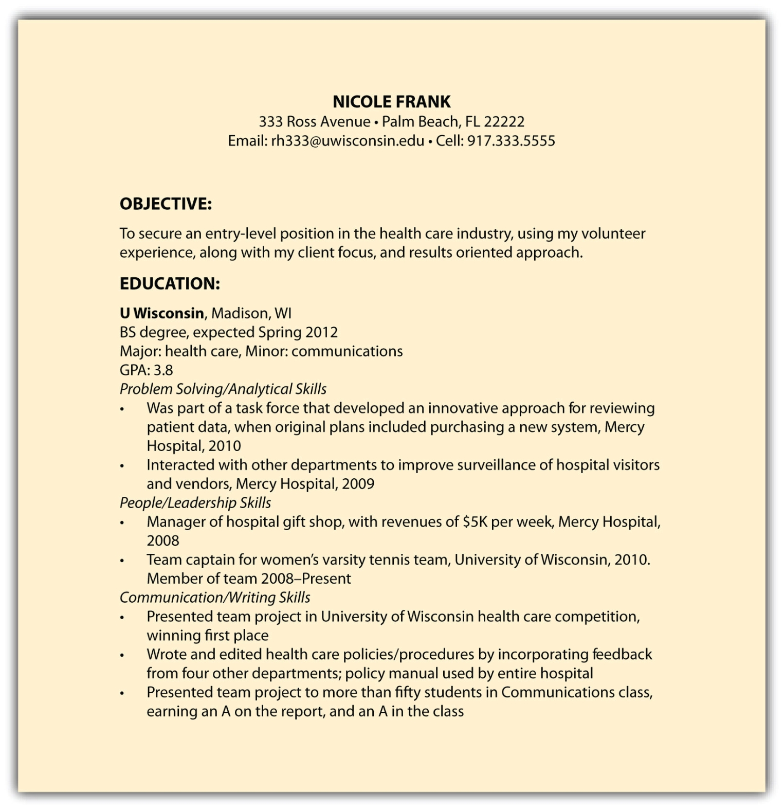

This chapter thus far has reviewed a résumé that follows a chronological format. Another format to consider is a functional résuméAs opposed to a chronological résumé, offers a different emphasis on a candidate’s accomplishments and background., which highlights the skills you’ve developed more than the individual jobs you’ve held.
Functional résumés can be different from what most recruiters will review, so it’s best to proceed with care. This includes consulting a career services office and consulting a professional résumé writer.
It’s important to note that throughout the many, many years that individuals have been drafting résumés, recruiters have expected to see a chronological résumé with certain sections: employment, education, and additional information. In most cases, it’s best to give recruiters what they expect: a chronological résumé.
With that understood, functional résumés can be used for college students and experienced candidates for the following reasons:
Here are some categories you may want to consider when drafting a functional résumé:
Figure 4.4 "Sample Functional Résumé 1" and Figure 4.5 "Sample Functional Résumé 2" are examples of how a functional résumé might look.
Figure 4.4 Sample Functional Résumé 1

Figure 4.5 Sample Functional Résumé 2
Some people interchange the word résumé with curriculum vitae (CV)Used internationally, particularly for research-oriented positions. A CV is often longer and more detailed than a résumé., which is incorrect because they are different items. A CV is mostly used internationally, particularly for research-oriented positions. A CV is often longer and more detailed than a résumé. In some cases, CVs are six to eight pages long and include published material and conference information if the person presented information to colleagues. A CV may or may not include biographical information, including marital status and nationality (this is typically the case with international students studying in the United States).
With this said, a résumé is the appropriate document when seeking any nonacademic or nonclinical position in the United States. If you are interested in working overseas, use research to familiarize yourself with an employer’s expectation regarding résumés, CVs, and additional information.